Data cleaning and EDA
Data Description:
The dataset was collected by the Behavioral Risk Factor Surveillance System (BRFSS) in 2015. This original dataset contains responses from 441,455 individuals and has 330 features. For this project, we use the one with 253,680 responses and a three-class diabetes target variable indicating no diabetes, prediabetes, or diabetes. The potential factors for diabetes are biological factors such as sex, blood pressure, cholesterol, BMI, heart disease, social factors such as education and income, and habits of smoking, physical exercise, eating fruit and vegetables.
There are 22 variables in our original dataset.
Diabetes_012: This is a categorical variable indicating the diabetes condition of the individual. 0 is for no diabetes or only during pregnancy, 1 is for prediabetes, and 2 is for diabetes.HighBP: This is a categorical variable indicating whether or not an individual has high blood pressure. (0 = no, 1 = yes)HighChol: This is a categorical variable indicating whether or not an individual has high blood cholesterol. (0 = no, 1 = yes)Cholcheck: This is a categorical variable indicating whether or not an individual has cholesterol check in 5 years. (0 = no, 1 = yes)BMI: It is a continuous variable indicating individual’s Body Mass Index.Smoker: It is a categorical variable showing participants identify themselves whether they have smoked at least 100 cigarettes in their entire life. (0 = no, 1 = yes)Stroke: A categorical variable indicating whether the individual was told they had a stroke. (0 = no, 1 = yes)HeartDiseaseorAttack: A categorical variable showing whether the individual had coronary heart disease (CHD) or myocardial infarction (MI). (0 = no, 1 = yes)PhysActivity: A categorical variable showing whether individual has physical activity in past 30 days which are not included in job. (0 = no, 1 = yes)Fruits: A categorical variable showing whether the individual consumes fruit 1 or more times per day. (0 = no, 1 = yes)Veggies: A categorical variable showing whether the individual consumes vegetables 1 or more times per day. (0 = no, 1 = yes)HvyAlcoholConsump: A categorical variable showing whether the individual is a heavy drinker, which means adult men having more than 14 drinks per week and adult women having more than 7 drinks per week. (0 = no, 1 = yes)AnyHealthcare: A categorical variable showing whether the individual has any kind of health care coverage, including health insurance, prepaid plans such as HMO, etc. (0 = no, 1 = yes)NoDocbcCost: A categorical variable showing whether the individual has a time in the past 12 months when he/she needed to see a doctor but could not because of cost. (0 = no, 1 = yes)GenHlth: A categorical variable showing the self evaluation of the individual’s general health. (1 = excellent, 2 = very good, 3 = good, 4 = fair, 5 = poor)MentHlth: A categorical variable showing the self evaluation of the individual was showing mental health problems including stress, depression, and problems with emotions, for how many days in their past 30 days.PhysHlth: A categorical variable showing the self evaluation of the individual was showing physical health problems, which includes physical illness and injury, for how many days during the past 30.DiffWalk: A categorical variable showing the self evaluation of whether the individual has serious difficulty walking or climbing stairs. (0 = no, 1 = yes)Sex: A categorical variable showing the individual’s born sex. (0 = female, 1 = male)Age: A categorical variable showing the individual’s age. (1 = 18-24 9 = 60-64 13 = 80 or older)Education: A categorical variable showing the individual’s Education level in the scale of 1-6. [1 = Never attended school or only kindergarten, 2 = Grades 1 through 8 (Elementary), 3 = Grades 9 through 11 (Some high school), 4 = Grade 12 or GED (High school graduate), 5 = College 1 year to 3 years (Some college or technical school), 6 = College 4 years or more (College graduate)]Income: A categorical variable showing the individual’s income level in the scale of 1-8. (1 = less than 10,000 dollars, 5 = less than 35,000 dollars, 8 = 75,000 dollars or more)
To explore our question of interest, we will keep
Diabetes_012 as our dependent variable, and investigate the
relationship between the other variables and Diabetes_012.
In our hypothesis, biological factors including blood pressure,
cholesterol level, BMI, Heart Disease, age, and sex might have a
relationship with the levels of diabetes, so we keep variables
HighBP, HighChol, BMI,
HeartDiseaseorAttack, Age, and
Sex.
We also predict that social factors including income, education,
smoking habits, alcohol consumption, physical exercise frequency, and
fruit and vegetable eating will be associated with different diabetes
levels. Therefore, we want to keep Income,
Education, Smoker, PhysActivity,
Fruits, HvyAlcoholConsump, and
Veggies variables.
Read in and Clean Data
First, we read in our data from the csv file.
diabetes_raw <- read_csv("data/Diabetes_012_data.csv")## Rows: 253680 Columns: 22
## ── Column specification ─────────────────────────
## Delimiter: ","
## dbl (22): Diabetes_012, HighBP, HighChol, CholCheck, BMI, Smoker, Stroke, He...
##
## ℹ Use `spec()` to retrieve the full column specification for this data.
## ℹ Specify the column types or set `show_col_types = FALSE` to quiet this message.head(diabetes_raw)## # A tibble: 6 × 22
## Diabetes_012 HighBP HighChol CholCheck BMI Smoker Stroke
## <dbl> <dbl> <dbl> <dbl> <dbl> <dbl> <dbl>
## 1 0 1 1 1 40 1 0
## 2 0 0 0 0 25 1 0
## 3 0 1 1 1 28 0 0
## 4 0 1 0 1 27 0 0
## 5 0 1 1 1 24 0 0
## 6 0 1 1 1 25 1 0
## # ℹ 15 more variables: HeartDiseaseorAttack <dbl>, PhysActivity <dbl>,
## # Fruits <dbl>, Veggies <dbl>, HvyAlcoholConsump <dbl>, AnyHealthcare <dbl>,
## # NoDocbcCost <dbl>, GenHlth <dbl>, MentHlth <dbl>, PhysHlth <dbl>,
## # DiffWalk <dbl>, Sex <dbl>, Age <dbl>, Education <dbl>, Income <dbl>diabetes_raw <- diabetes_raw |>
select(Diabetes_012,HighBP,HighChol, BMI, Smoker,
HeartDiseaseorAttack, Sex,Income, Education,
PhysActivity, Fruits, Veggies, Age, HvyAlcoholConsump) |>
mutate(Diabetes_012 = factor(Diabetes_012, levels = c(0, 1, 2), labels = c("No Diabetes", "Pre-Diabetes", "Diabetes")),
HighBP = factor(HighBP, levels = c(0, 1), labels = c("No", "Yes")),
HighChol = factor(HighChol, levels = c(0, 1), labels = c("No", "Yes")),
HeartDiseaseorAttack = factor(HeartDiseaseorAttack, levels = c(0, 1), labels = c("No", "Yes")),
Smoker = factor(Smoker, levels = c(0, 1), labels = c("Nonsmoker", "Smoker")),
Sex = factor(Sex, levels = c(0, 1), labels = c("Female", "Male")),
Fruits = factor(Fruits, levels = c(0, 1), labels = c("No", "Yes")),
Veggies = factor(Veggies, levels = c(0, 1), labels = c("No", "Yes")),
HvyAlcoholConsump = factor(HvyAlcoholConsump, levels = c(0, 1), labels = c("No", "Yes")),
PhysActivity = factor(PhysActivity, levels = c(0, 1), labels = c("No", "Yes")))
diabetes_raw## # A tibble: 253,680 × 14
## Diabetes_012 HighBP HighChol BMI Smoker HeartDiseaseorAttack Sex Income
## <fct> <fct> <fct> <dbl> <fct> <fct> <fct> <dbl>
## 1 No Diabetes Yes Yes 40 Smoker No Fema… 3
## 2 No Diabetes No No 25 Smoker No Fema… 1
## 3 No Diabetes Yes Yes 28 Nonsmok… No Fema… 8
## 4 No Diabetes Yes No 27 Nonsmok… No Fema… 6
## 5 No Diabetes Yes Yes 24 Nonsmok… No Fema… 4
## 6 No Diabetes Yes Yes 25 Smoker No Male 8
## 7 No Diabetes Yes No 30 Smoker No Fema… 7
## 8 No Diabetes Yes Yes 25 Smoker No Fema… 4
## 9 Diabetes Yes Yes 30 Smoker Yes Fema… 1
## 10 No Diabetes No No 24 Nonsmok… No Male 3
## # ℹ 253,670 more rows
## # ℹ 6 more variables: Education <dbl>, PhysActivity <fct>, Fruits <fct>,
## # Veggies <fct>, Age <dbl>, HvyAlcoholConsump <fct>Exploratory Data Analysis
Bivariate Plots and Analysis Analysis
We first perform univariate analysis for our dependent variable
Diabetes_012 and plot the bivariate relationship between
our interested factors with the diabetes variable respectively.
Distribution of Diabetes Types
Diabetesraw_dist =
ggplot(diabetes_raw, aes(Diabetes_012)) +
geom_bar(aes(fill = Diabetes_012)) +
scale_fill_brewer(palette = 'Pastel1') +
ylab("Frequencies") +
xlab("Diabetes Status") +
ggtitle("Raw Overall Diabetes Status Distribution") +
theme_minimal()
Diabetesraw_dist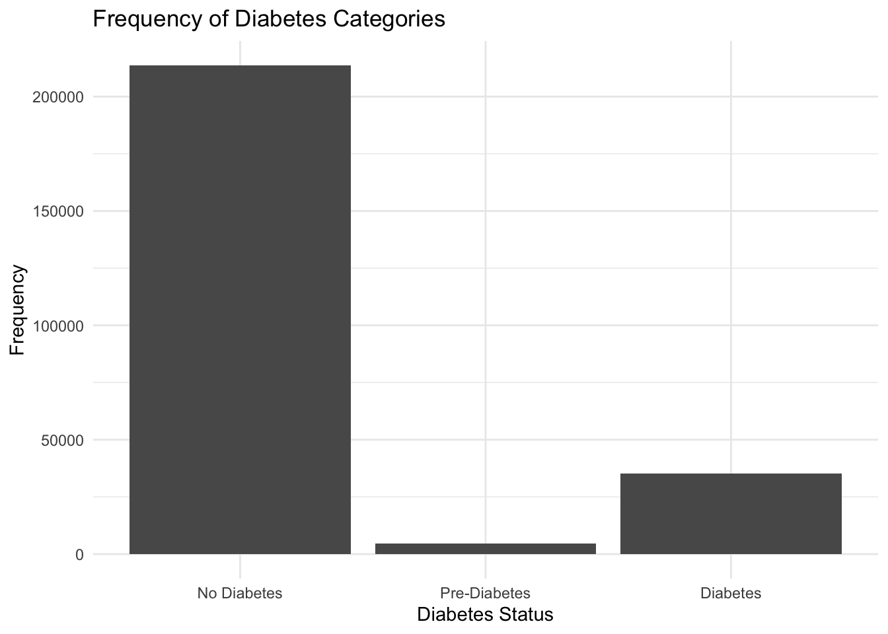
From the distribution of Diabetes Status, we realize that Pre-Diabetes status has extreme low data samples, so we will exclude this data in our future analysis.
diabetes_new =
diabetes_raw |>
filter(Diabetes_012 == 'Diabetes' | Diabetes_012 == 'No Diabetes') |>
rename(Diabetes_status = Diabetes_012)
diabetes_new## # A tibble: 249,049 × 14
## Diabetes_status HighBP HighChol BMI Smoker HeartDiseaseorAttack Sex
## <fct> <fct> <fct> <dbl> <fct> <fct> <fct>
## 1 No Diabetes Yes Yes 40 Smoker No Female
## 2 No Diabetes No No 25 Smoker No Female
## 3 No Diabetes Yes Yes 28 Nonsmoker No Female
## 4 No Diabetes Yes No 27 Nonsmoker No Female
## 5 No Diabetes Yes Yes 24 Nonsmoker No Female
## 6 No Diabetes Yes Yes 25 Smoker No Male
## 7 No Diabetes Yes No 30 Smoker No Female
## 8 No Diabetes Yes Yes 25 Smoker No Female
## 9 Diabetes Yes Yes 30 Smoker Yes Female
## 10 No Diabetes No No 24 Nonsmoker No Male
## # ℹ 249,039 more rows
## # ℹ 7 more variables: Income <dbl>, Education <dbl>, PhysActivity <fct>,
## # Fruits <fct>, Veggies <fct>, Age <dbl>, HvyAlcoholConsump <fct>write.csv(diabetes_new, "data/diabetes_new.csv", row.names = FALSE)
diabetes_new1=diabetes_new|>
sample_n(200, replace = FALSE)
write.csv(diabetes_new1, "data/diabetes_new1.csv", row.names = FALSE)1. High Blood Pressure via Diabetes
HighBP_dist =
ggplot(diabetes_new, aes(Diabetes_status, ..count..)) +
geom_bar(aes(fill = HighBP), position = "dodge") +
scale_fill_brewer(palette = 'Pastel1') +
ylab("Frequencies") +
xlab("Diabetes Status") +
ggtitle("HighBP over Diabetes") +
theme_minimal()
HighBP_dist## Warning: The dot-dot notation (`..count..`) was
## deprecated in ggplot2 3.4.0.
## ℹ Please use `after_stat(count)` instead.
## This warning is displayed once every 8 hours.
## Call `lifecycle::last_lifecycle_warnings()` to
## see where this warning was generated.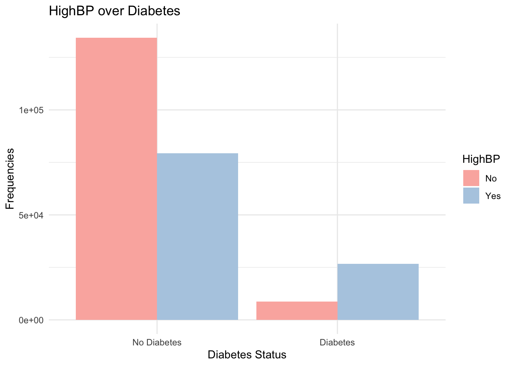
2. High Cholesterol Level via Diabetes
HighChol_dist =
ggplot(diabetes_new, aes(Diabetes_status, ..count..)) +
geom_bar(aes(fill = HighChol), position = "dodge") +
scale_fill_brewer(palette = 'Pastel1') +
ylab("Frequencies") +
xlab("Diabetes Status") +
ggtitle("HighChol over Diabetes") +
theme_minimal()
HighChol_dist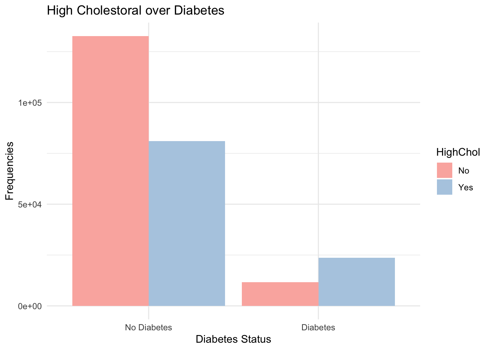
3. BMI via Diabetes
BMI_dist =
ggplot(diabetes_new, aes(BMI, ..count..)) +
geom_bar(aes(fill = Diabetes_status)) +
scale_fill_brewer(palette = 'Pastel1') +
ylab("Frequencies") +
xlab("BMI") +
ggtitle("BMI Distribution") +
theme_minimal()
BMI_dist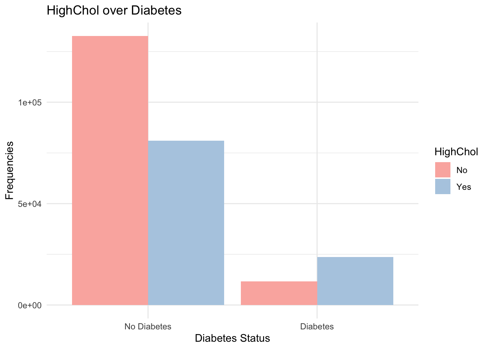
4. Heart Disease or Attack via Diabetes
Heartdisease_dist =
ggplot(diabetes_new, aes(Diabetes_status, ..count..)) +
geom_bar(aes(fill = HeartDiseaseorAttack), position = "dodge") +
scale_fill_brewer(palette = 'Pastel1') +
ylab("Frequencies") +
xlab("Diabetes Status") +
ggtitle("Heart Disease over Diabetes") +
theme_minimal()
Heartdisease_dist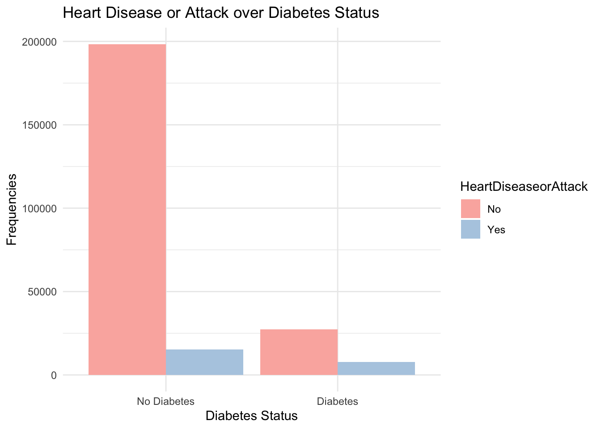
5. Age via Diabetes
Age_dist =
ggplot(diabetes_new, aes(Age, ..count..)) +
geom_bar(aes(fill = Diabetes_status)) +
scale_fill_brewer(palette = 'Pastel1') +
ylab("Frequencies") +
xlab("Age") +
ggtitle("Age Distribution") +
theme_minimal()
Age_dist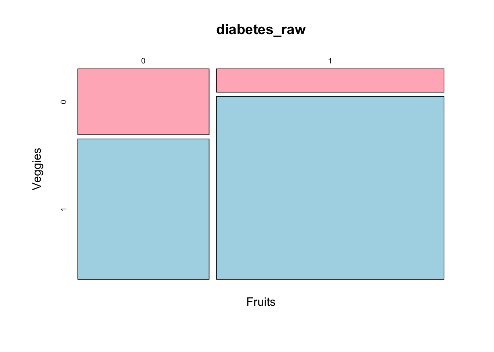
6. Sex via Diabetes
Sex_dist =
ggplot(diabetes_new, aes(Diabetes_status, ..count..)) +
geom_bar(aes(fill = Sex), , position = "dodge") +
scale_fill_brewer(palette = 'Pastel1') +
ylab("Frequencies") +
xlab("Diabetes") +
ggtitle("Sex over Diabetes Status") +
theme_minimal()
Sex_dist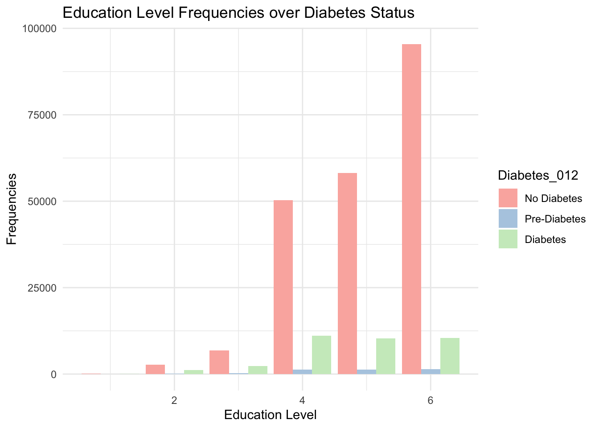 #### 7. Income via Diabetes
Income_dist =
ggplot(diabetes_new, aes(Income, ..count..)) +
geom_bar(aes(fill = Diabetes_status)) +
scale_fill_brewer(palette = 'Pastel1') +
ylab("Frequencies") +
xlab("Income") +
ggtitle("Income Distribution") +
theme_minimal()
Income_dist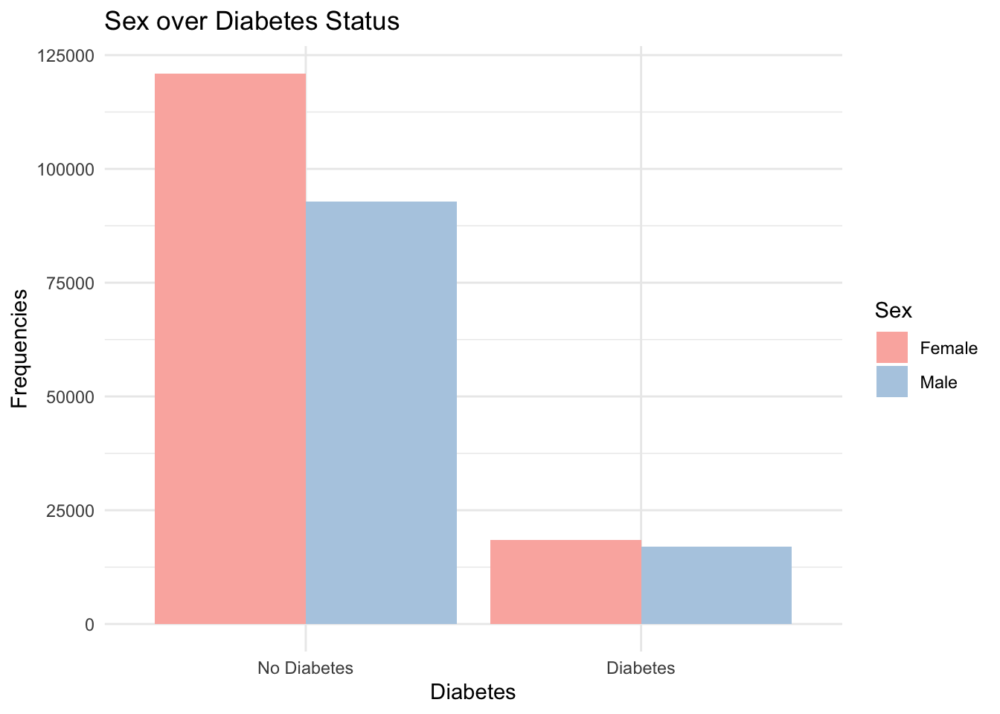
8. Education via Diabetes
Education_dist =
ggplot(diabetes_new, aes(Education, ..count..)) +
geom_bar(aes(fill = Diabetes_status)) +
scale_fill_brewer(palette = 'Pastel1') +
ylab("Frequencies") +
xlab("Education") +
ggtitle("Education Distribution") +
theme_minimal()
Education_dist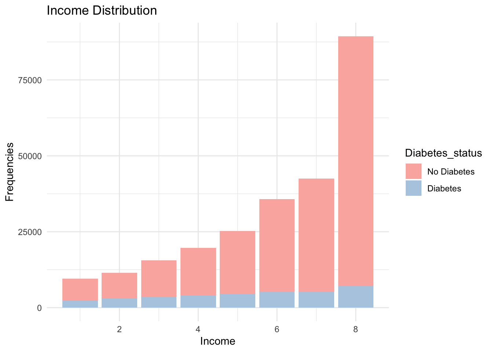
9. Fruits via Diabetes
Fruits_dist =
ggplot(diabetes_new, aes(Diabetes_status, ..count..)) +
geom_bar(aes(fill = Fruits), , position = "dodge") +
scale_fill_brewer(palette = 'Pastel1') +
ylab("Frequencies") +
xlab("Diabetes") +
ggtitle("Fruits over Diabetes") +
theme_minimal()
Fruits_dist #### 10. Veggies via Diabetes
#### 10. Veggies via Diabetes
Veggies_dist =
ggplot(diabetes_new, aes(Diabetes_status, ..count..)) +
geom_bar(aes(fill = Veggies), , position = "dodge") +
scale_fill_brewer(palette = 'Pastel1') +
ylab("Frequencies") +
xlab("Diabetes") +
ggtitle("Vegetables over Diabetes") +
theme_minimal()
Veggies_dist
11. Smoker via Diabetes
Smoker_dist =
ggplot(diabetes_new, aes(Diabetes_status, ..count..)) +
geom_bar(aes(fill = Smoker), , position = "dodge") +
scale_fill_brewer(palette = 'Pastel1') +
ylab("Frequencies") +
xlab("Diabetes") +
ggtitle("Smokers over Diabetes") +
theme_minimal()
Smoker_dist #### 12. PhysActivity via Diabetes
#### 12. PhysActivity via Diabetes
Physactivity_dist =
ggplot(diabetes_new, aes(Diabetes_status, ..count..)) +
geom_bar(aes(fill = PhysActivity), , position = "dodge") +
scale_fill_brewer(palette = 'Pastel1') +
ylab("Frequencies") +
xlab("Diabetes") +
ggtitle("PhysActivity over Diabetes") +
theme_minimal()
Physactivity_dist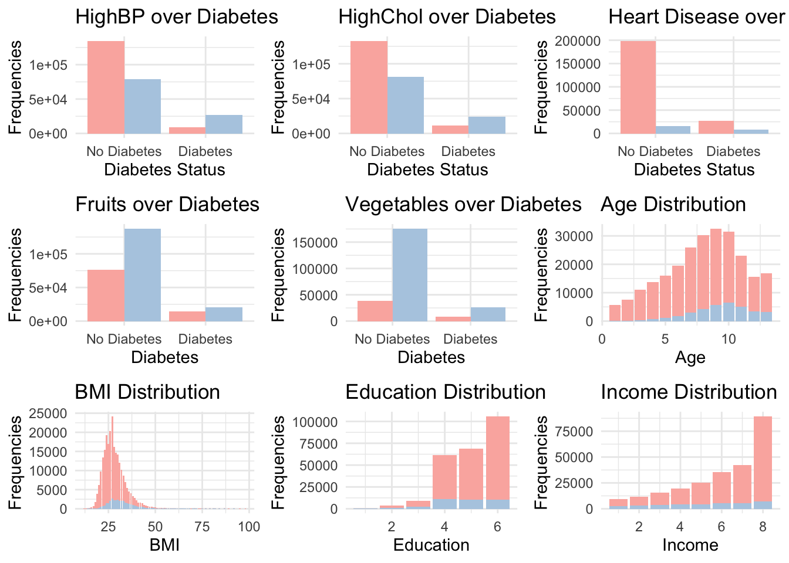 #### 13. HvyAlcoholConsump via Diabetes
HvyAlcohol_dist =
ggplot(diabetes_new, aes(Diabetes_status, ..count..)) +
geom_bar(aes(fill = HvyAlcoholConsump), , position = "dodge") +
scale_fill_brewer(palette = 'Pastel1') +
ylab("Frequencies") +
xlab("Diabetes") +
ggtitle("Alcohol over Diabetes") +
theme_minimal()
HvyAlcohol_dist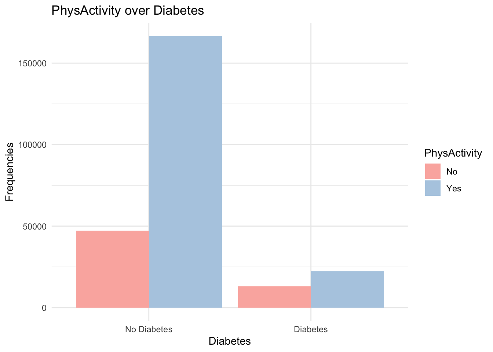
According to the bar chart distribution, we decide to drop Heavyalcoholconsumption, heart disease attack these two variables due to following reasons. 1. For the heavy alcohol consumption, the samples drinking alcohol in large amount is overall too few in the sample, so the variable more not be fully accutately captured. Therefore, if we test on this variable, it may be not representitive and significant. 2. For the heart disease attack, it is the same reason that sample size with heart disease attack is too small, so it may not be representitive and meaningful to test on. We will also drop age and education these two variables due to following reasons. 1. For the age, the measure and categorize method is not suitable for our statistical test, since it is a categorical variable showing the individual’s age. (1 = 18-24 9 = 60-64 13 = 80 or older), and each number does not represent the true age of the samples, so we cannot do a precise test on it. 2. For the education, it is the same reason that it is a categorical variable showing the individual’s Education level in the scale of 1-6. [1 = Never attended school or only kindergarten, 2 = Grades 1 through 8 (Elementary), 3 = Grades 9 through 11 (Some high school), 4 = Grade 12 or GED (High school graduate), 5 = College 1 year to 3 years (Some college or technical school), 6 = College 4 years or more (College graduate)].
Therefore, now we come to close with 9 variables that are potential estimates in our model. They are: 1. High Blood Pressure. 2. High Cholesterol Level. 3. BMI. 4. Sex. 5. Fruits Consumption. 6. Veggies Consumption. 7. Smoking. 8. Income Level. 9. Physical Acitivity.
Plots all together
plots1 = plot_grid(
HighBP_dist + theme(legend.position="none"),
HighChol_dist + theme(legend.position="none"),
Fruits_dist + theme(legend.position="none"),
Veggies_dist + theme(legend.position="none"),
BMI_dist + theme(legend.position="none"),
Sex_dist + theme(legend.position="none"),
Income_dist + theme(legend.position="none"),
Physactivity_dist + theme(legend.position="none"),
Smoker_dist + theme(legend.position="none")) +
theme(axis.text.x = element_text(size = 4))
plots1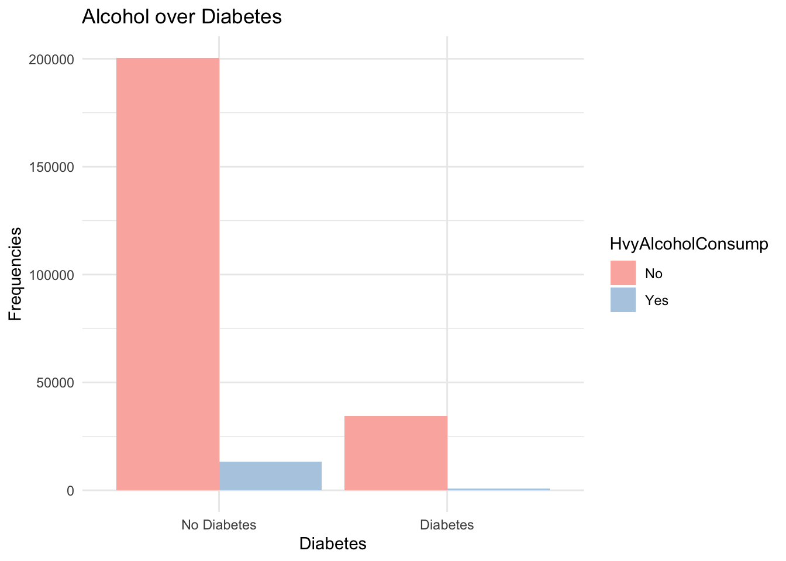
BMI Categorization
# write a function to categorize bmi values to diverse weight status
categorize_bmi <- function(bmi) {
if (bmi < 18.5) {
return("Underweight")
} else if (bmi >= 18.5 & bmi < 25) {
return("Normal weight")
} else if (bmi >= 25 & bmi < 30) {
return("Overweight")
} else {
return("Obesity")
}
}
# add a column named weight_status to the data set
diabetes_raw$weight_status <- sapply(diabetes_raw$BMI, categorize_bmi)Plot: Association between Diabetes Status and blood pressure status
ggplot(diabetes_raw, aes(x = Diabetes_012, fill = HighBP)) +
geom_bar(position = "fill") +
ylab("Blood Pressure Status") +
xlab("Diabetes Status") +
ggtitle("Association between Diabetes Status and Blood Pressure Status") +
scale_fill_brewer(palette = "Pastel1") +
theme_minimal()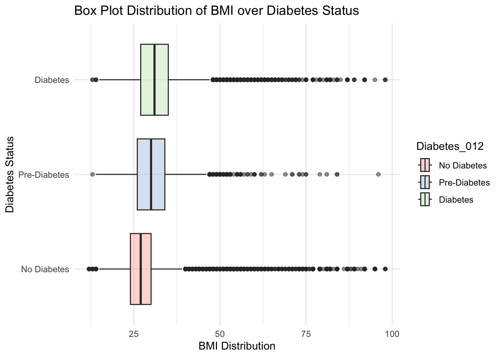
Plot: Association between Diabetes Status and Weight Status
ggplot(diabetes_raw, aes(x = Diabetes_012, fill = weight_status)) +
geom_bar(position = "fill") +
ylab("Proportion") +
xlab("Diabetes Status") +
ggtitle("Association between Diabetes Status and Weight Status") +
scale_fill_brewer(palette = "Pastel1") +
theme_minimal()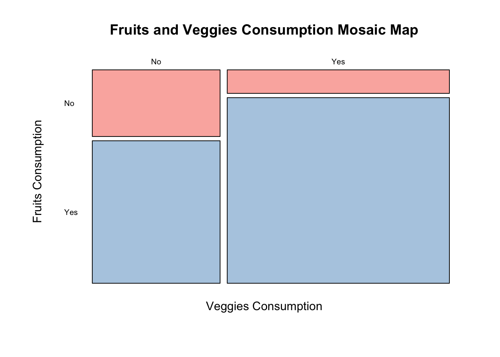
Plot: Box plot distribution of BMI in different Diabetes status
plotBMI = ggplot(diabetes_raw, aes(x = BMI, y = Diabetes_012, fill = Diabetes_012))+
geom_boxplot(alpha = 0.5) +
theme(legend.position = 'none') +
scale_fill_brewer(palette = 'Pastel1') +
ylab("Diabetes Status") +
xlab("BMI Distribution") +
ggtitle("Box Plot Distribution of BMI over Diabetes Status") +
theme_minimal()
plotBMI
Plot: Smoking Status over Diabetes Status
plot_smoke =
ggplot(diabetes_raw, aes(Smoker, ..count..)) +
geom_bar(aes(fill = Diabetes_012), position = "dodge") +
scale_fill_brewer(palette = 'Pastel1') +
ylab("Frequencies") +
xlab("Smoking Status") +
ggtitle("Smoking Status Frequencies over Diabetes Status") +
theme_minimal()
plot_smoke ### Plot: Fruits or Veggies over different Diabetes Status
### Plot: Fruits or Veggies over different Diabetes Status
mosaicplot(Fruits~Veggies,data=diabetes_raw,col=c("Light Pink","Light Blue"))
Plot: Distribution of Education Level over different Diabetes Status
plot_education =
ggplot(diabetes_raw, aes(x = Education, ..count..)) +
geom_bar(aes(fill = Diabetes_012), position = 'dodge') +
scale_fill_brewer(palette = 'Pastel1') +
ylab("Frequencies") +
xlab("Education Level") +
ggtitle("Education Level Frequencies over Diabetes Status") +
theme_minimal()
plot_education
Plot: Distribution of Income Level over different Diabetes Status
plot_income =
ggplot(diabetes_raw, aes(Income, ..count..)) +
geom_bar(aes(fill = Diabetes_012), position = "dodge") +
scale_fill_brewer(palette = 'Pastel1') +
ylab("Frequencies") +
xlab("Income Level") +
ggtitle("Income Level Frequencies over Diabetes Status") +
theme_minimal()
plot_income
Tables
pvalue <- function(x, ...) {
# Construct vectors of data y, and groups (strata) g
y <- unlist(x)
g <- factor(rep(1:length(x), times=sapply(x, length)))
if (is.numeric(y)) {
# For numeric variables, perform a one-side anova test
p <- aov(y ~ g)$p.value
} else {
# For categorical variables, perform a chi-squared test of independence
p <- chisq.test(table(y, g))$p.value
}
# Format the p-value, using an HTML entity for the less-than sign.
# The initial empty string places the output on the line below the variable label.
c("", sub("<", "<", format.pval(p, digits=3, eps=0.001)))
}Create R table 1
## Rtable_1 shows the demographics stats
Rtable_1 =
table1(~ factor(Sex) + Age| Diabetes_012, data=diabetes_raw, overall=F, extra.col=list(`P-value`=pvalue))
Rtable_1| No Diabetes (N=213703) |
Pre-Diabetes (N=4631) |
Diabetes (N=35346) |
P-value | |
|---|---|---|---|---|
| factor(Sex) | ||||
| Female | 120959 (56.6%) | 2604 (56.2%) | 18411 (52.1%) | <0.001 |
| Male | 92744 (43.4%) | 2027 (43.8%) | 16935 (47.9%) | |
| Age | ||||
| Mean (SD) | 7.79 (3.10) | 9.08 (2.63) | 9.38 (2.33) | |
| Median [Min, Max] | 8.00 [1.00, 13.0] | 9.00 [1.00, 13.0] | 10.0 [1.00, 13.0] |
## Rtable_2 shows the physiology status factor stats
Rtable_2 =
table1(~ factor(HighBP) + factor(HighChol) + BMI + factor(weight_status) | Diabetes_012, data=diabetes_raw, overall=F, extra.col=list(`P-value`=pvalue))
Rtable_2| No Diabetes (N=213703) |
Pre-Diabetes (N=4631) |
Diabetes (N=35346) |
P-value | |
|---|---|---|---|---|
| factor(HighBP) | ||||
| No | 134391 (62.9%) | 1718 (37.1%) | 8742 (24.7%) | <0.001 |
| Yes | 79312 (37.1%) | 2913 (62.9%) | 26604 (75.3%) | |
| factor(HighChol) | ||||
| No | 132673 (62.1%) | 1756 (37.9%) | 11660 (33.0%) | <0.001 |
| Yes | 81030 (37.9%) | 2875 (62.1%) | 23686 (67.0%) | |
| BMI | ||||
| Mean (SD) | 27.7 (6.26) | 30.7 (6.96) | 31.9 (7.36) | |
| Median [Min, Max] | 27.0 [12.0, 98.0] | 30.0 [13.0, 96.0] | 31.0 [13.0, 98.0] | |
| factor(weight_status) | ||||
| Normal weight | 64336 (30.1%) | 689 (14.9%) | 3928 (11.1%) | <0.001 |
| Obesity | 64906 (30.4%) | 2388 (51.6%) | 20557 (58.2%) | |
| Overweight | 81531 (38.2%) | 1526 (33.0%) | 10692 (30.2%) | |
| Underweight | 2930 (1.4%) | 28 (0.6%) | 169 (0.5%) |
## Rtable_3 shows the social-economic factor stats
Rtable_3 =
table1(~ factor(Education) + factor(Income) | Diabetes_012, data=diabetes_raw, overall=F, extra.col=list(`P-value`=pvalue))## Warning in chisq.test(table(y, g)): Chi-squared approximation may be incorrectRtable_3| No Diabetes (N=213703) |
Pre-Diabetes (N=4631) |
Diabetes (N=35346) |
P-value | |
|---|---|---|---|---|
| factor(Education) | ||||
| 1 | 125 (0.1%) | 2 (0.0%) | 47 (0.1%) | <0.001 |
| 2 | 2699 (1.3%) | 161 (3.5%) | 1183 (3.3%) | |
| 3 | 6868 (3.2%) | 314 (6.8%) | 2296 (6.5%) | |
| 4 | 50334 (23.6%) | 1350 (29.2%) | 11066 (31.3%) | |
| 5 | 58223 (27.2%) | 1333 (28.8%) | 10354 (29.3%) | |
| 6 | 95454 (44.7%) | 1471 (31.8%) | 10400 (29.4%) | |
| factor(Income) | ||||
| 1 | 7114 (3.3%) | 314 (6.8%) | 2383 (6.7%) | <0.001 |
| 2 | 8341 (3.9%) | 356 (7.7%) | 3086 (8.7%) | |
| 3 | 12005 (5.6%) | 421 (9.1%) | 3568 (10.1%) | |
| 4 | 15622 (7.3%) | 459 (9.9%) | 4054 (11.5%) | |
| 5 | 20792 (9.7%) | 587 (12.7%) | 4504 (12.7%) | |
| 6 | 30431 (14.2%) | 748 (16.2%) | 5291 (15.0%) | |
| 7 | 37219 (17.4%) | 735 (15.9%) | 5265 (14.9%) | |
| 8 | 82179 (38.5%) | 1011 (21.8%) | 7195 (20.4%) |
We don’t have any healthcare, so drop here
## Rtable_4 shows the physical-habits factor stats
#Rtable_4 =
# table1(~ factor(Smoker) + factor(PhysActivity) + factor(Fruits) + factor(Veggies) + factor(HvyAlcoholConsump) + factor(AnyHealthcare) | Diabetes_012, data=diabetes_raw, overall=F, extra.col=list(`P-value`=pvalue))
#Rtable_4Data Random sampling each 500 from both diabetes and nondiabetes population. Join them together.
set.seed(123)
diabetes=
diabetes_raw |>
filter(Diabetes_012 == 'Diabetes')
diabetes_sample =
sample_n(diabetes, size = 500, replace = FALSE)
diabetes_sample## # A tibble: 500 × 15
## Diabetes_012 HighBP HighChol BMI Smoker HeartDiseaseorAttack Sex Income
## <fct> <fct> <fct> <dbl> <fct> <fct> <fct> <dbl>
## 1 Diabetes Yes Yes 32 Smoker No Male 7
## 2 Diabetes Yes Yes 30 Nonsmok… No Male 8
## 3 Diabetes Yes Yes 33 Smoker Yes Male 8
## 4 Diabetes Yes Yes 38 Smoker No Fema… 3
## 5 Diabetes Yes Yes 21 Nonsmok… No Fema… 3
## 6 Diabetes Yes No 32 Smoker Yes Fema… 7
## 7 Diabetes Yes Yes 34 Smoker No Male 1
## 8 Diabetes Yes No 30 Smoker No Male 1
## 9 Diabetes Yes Yes 21 Smoker Yes Fema… 6
## 10 Diabetes Yes Yes 27 Nonsmok… No Fema… 6
## # ℹ 490 more rows
## # ℹ 7 more variables: Education <dbl>, PhysActivity <fct>, Fruits <fct>,
## # Veggies <fct>, Age <dbl>, HvyAlcoholConsump <fct>, weight_status <chr>nondiabetes=
diabetes_raw |>
filter(Diabetes_012 == 'No Diabetes')
nondiabetes_sample =
sample_n(nondiabetes, size = 500, replace = FALSE)
nondiabetes_sample## # A tibble: 500 × 15
## Diabetes_012 HighBP HighChol BMI Smoker HeartDiseaseorAttack Sex Income
## <fct> <fct> <fct> <dbl> <fct> <fct> <fct> <dbl>
## 1 No Diabetes No No 30 Smoker No Fema… 8
## 2 No Diabetes Yes Yes 28 Smoker No Fema… 6
## 3 No Diabetes No Yes 26 Smoker No Male 2
## 4 No Diabetes No No 24 Smoker No Fema… 7
## 5 No Diabetes No No 26 Nonsmok… No Male 7
## 6 No Diabetes Yes No 26 Nonsmok… No Fema… 6
## 7 No Diabetes No Yes 20 Nonsmok… No Fema… 3
## 8 No Diabetes Yes Yes 34 Nonsmok… No Fema… 4
## 9 No Diabetes No No 23 Smoker No Male 8
## 10 No Diabetes No No 24 Smoker No Fema… 7
## # ℹ 490 more rows
## # ℹ 7 more variables: Education <dbl>, PhysActivity <fct>, Fruits <fct>,
## # Veggies <fct>, Age <dbl>, HvyAlcoholConsump <fct>, weight_status <chr>sample_df = full_join(diabetes_sample, nondiabetes_sample)## Joining with `by = join_by(Diabetes_012, HighBP,
## HighChol, BMI, Smoker, HeartDiseaseorAttack,
## Sex, Income, Education, PhysActivity, Fruits,
## Veggies, Age, HvyAlcoholConsump, weight_status)`sample_df## # A tibble: 1,000 × 15
## Diabetes_012 HighBP HighChol BMI Smoker HeartDiseaseorAttack Sex Income
## <fct> <fct> <fct> <dbl> <fct> <fct> <fct> <dbl>
## 1 Diabetes Yes Yes 32 Smoker No Male 7
## 2 Diabetes Yes Yes 30 Nonsmok… No Male 8
## 3 Diabetes Yes Yes 33 Smoker Yes Male 8
## 4 Diabetes Yes Yes 38 Smoker No Fema… 3
## 5 Diabetes Yes Yes 21 Nonsmok… No Fema… 3
## 6 Diabetes Yes No 32 Smoker Yes Fema… 7
## 7 Diabetes Yes Yes 34 Smoker No Male 1
## 8 Diabetes Yes No 30 Smoker No Male 1
## 9 Diabetes Yes Yes 21 Smoker Yes Fema… 6
## 10 Diabetes Yes Yes 27 Nonsmok… No Fema… 6
## # ℹ 990 more rows
## # ℹ 7 more variables: Education <dbl>, PhysActivity <fct>, Fruits <fct>,
## # Veggies <fct>, Age <dbl>, HvyAlcoholConsump <fct>, weight_status <chr>Covariate visualisation
1. HighBP + BMI
ggplot(sample_df, aes(fill=Diabetes_012, y=BMI, x=HighBP)) +
geom_bar(position="dodge", stat="identity") +
ylab("BMI") +
xlab("Blood Pressure Level") +
ggtitle("Association between HighBP & BMI") +
scale_fill_brewer(palette = "Pastel1") +
theme_minimal()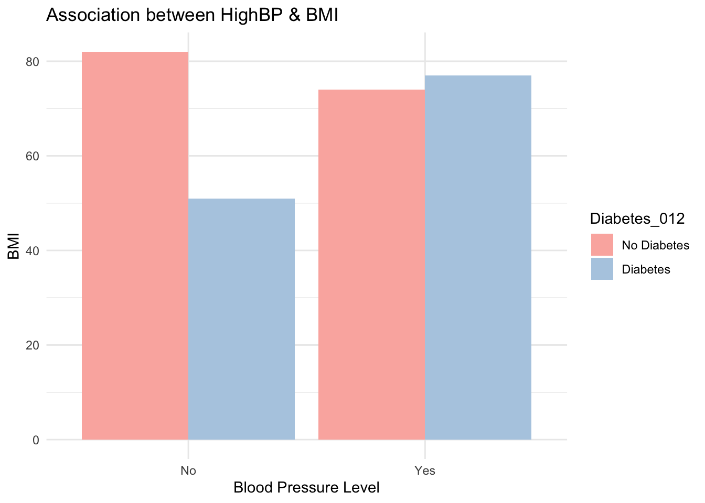
1. HighChol + BMI
ggplot(sample_df, aes(fill=Diabetes_012, y=BMI, x=HighChol)) +
geom_bar(position="dodge", stat="identity") +
ylab("BMI") +
xlab("Cholesterol Level") +
ggtitle("Association between Cholesterol Level & BMI") +
scale_fill_brewer(palette = "Pastel1") +
theme_minimal() ### Veggies + Fruits vs Physactivity
### Veggies + Fruits vs Physactivity